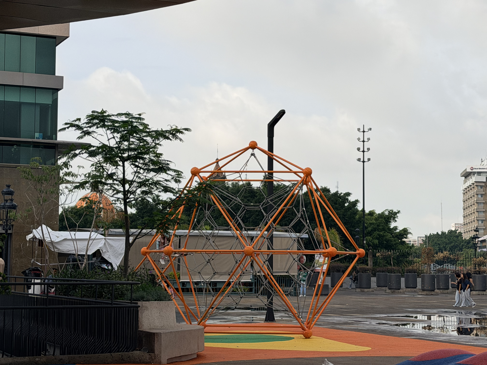

ESTRENAN IMAGEN RUMBO A LA FIFA 2026.
ZONA INFANTIL
 Este espacio fue diseñado desde cero para convertirse en un parque interactivo y recreativo gratuito en pleno Centro Histórico, enfocado en el turismo familiar.Atracciones principales: Cuenta con juegos infantiles de alta resistencia, áreas interactivas y su mayor novedad: una tirolesa.Protección contra el clima: Para mitigar el calor de la ciudad o las lluvias repentinas, toda la zona cuenta con una enorme cubierta (malla sombra estructural) que protege a los niños durante el día.
Este espacio fue diseñado desde cero para convertirse en un parque interactivo y recreativo gratuito en pleno Centro Histórico, enfocado en el turismo familiar.Atracciones principales: Cuenta con juegos infantiles de alta resistencia, áreas interactivas y su mayor novedad: una tirolesa.Protección contra el clima: Para mitigar el calor de la ciudad o las lluvias repentinas, toda la zona cuenta con una enorme cubierta (malla sombra estructural) que protege a los niños durante el día.
TIROLESA
 El concepto de "Espacios Públicos Vivos": El Gobierno de Guadalajara y del Estado buscaban romper con la idea de que los centros históricos son solo para ver edificios viejos, museos o caminar de paso. El objetivo es que las familias se apropien del espacio público y se queden ahí por horas. Una tirolesa genera un "ancla" de entretenimiento gratuito que antes solo se encontraba en parques privados o centros comerciales periféricos.Al ser una tirolesa mecánica de baja altura (operada por gravedad y el propio impulso de los niños), promueve el juego activo y la recreación al aire libre, alejando a los menores de las pantallas mientras recorren el centro de la ciudad.
El concepto de "Espacios Públicos Vivos": El Gobierno de Guadalajara y del Estado buscaban romper con la idea de que los centros históricos son solo para ver edificios viejos, museos o caminar de paso. El objetivo es que las familias se apropien del espacio público y se queden ahí por horas. Una tirolesa genera un "ancla" de entretenimiento gratuito que antes solo se encontraba en parques privados o centros comerciales periféricos.Al ser una tirolesa mecánica de baja altura (operada por gravedad y el propio impulso de los niños), promueve el juego activo y la recreación al aire libre, alejando a los menores de las pantallas mientras recorren el centro de la ciudad.
JARDINERAS
 Las jardineras de la Plaza Tapatía y del Paseo Cabañas también fueron una pieza clave (y muy visible) de esta gran remodelación. Al igual que con la fuente, el diseño de estos espacios verdes cambió por completo por razones estéticas, climáticas y de mantenimiento.Las antiguas jardineras del andador peatonal eran de concreto elevado, pesadas y estorbosas.
Muchas de ellas fueron demolidas o modificadas para:
Ampliar el flujo peatonal: El objetivo era liberar espacio en el andador central de la Plaza Tapatía para permitir el paso cómodo de miles de personas durante los eventos masivos del Mundial y el Fan Fest.
Nivelación y accesibilidad: Se eliminaron las esquinas peligrosas de concreto viejo y se integraron los nuevos espacios verdes a nivel de piso o con bordes modernos y redondeados, reduciendo los obstáculos visuales y físicos.
Las jardineras de la Plaza Tapatía y del Paseo Cabañas también fueron una pieza clave (y muy visible) de esta gran remodelación. Al igual que con la fuente, el diseño de estos espacios verdes cambió por completo por razones estéticas, climáticas y de mantenimiento.Las antiguas jardineras del andador peatonal eran de concreto elevado, pesadas y estorbosas.
Muchas de ellas fueron demolidas o modificadas para:
Ampliar el flujo peatonal: El objetivo era liberar espacio en el andador central de la Plaza Tapatía para permitir el paso cómodo de miles de personas durante los eventos masivos del Mundial y el Fan Fest.
Nivelación y accesibilidad: Se eliminaron las esquinas peligrosas de concreto viejo y se integraron los nuevos espacios verdes a nivel de piso o con bordes modernos y redondeados, reduciendo los obstáculos visuales y físicos.
PAVIMENTO Y LUMINARIA
 Impermeabilización Estructural: El punto más crítico fue la intervención de la Plaza Liberación, donde se aplicó un liner termofusionado para detener por completo las filtraciones de agua hacia los estacionamientos subterráneos y los túneles inferiores.Se reemplazaron miles de metros cuadrados de pisos y adoquines dañados, se instalaron rampas peatonales universales y se retiró mobiliario urbano obsoleto o deteriorado (como antiguos postes del trolebús) para limpiar la vista arquitectónica.El rediseño del alumbrado no fue solo estético, sino una estrategia de seguridad pública. Se mapearon los puntos que antes quedaban a oscuras en la Plaza Tapatía, los pasillos laterales y los callejones que conectan con el Hospicio Cabañas.
Impermeabilización Estructural: El punto más crítico fue la intervención de la Plaza Liberación, donde se aplicó un liner termofusionado para detener por completo las filtraciones de agua hacia los estacionamientos subterráneos y los túneles inferiores.Se reemplazaron miles de metros cuadrados de pisos y adoquines dañados, se instalaron rampas peatonales universales y se retiró mobiliario urbano obsoleto o deteriorado (como antiguos postes del trolebús) para limpiar la vista arquitectónica.El rediseño del alumbrado no fue solo estético, sino una estrategia de seguridad pública. Se mapearon los puntos que antes quedaban a oscuras en la Plaza Tapatía, los pasillos laterales y los callejones que conectan con el Hospicio Cabañas.
ESCALAR

Estructura de Escalar (Redes Geodésicas): Se instaló una gran pirámide o telaraña de cuerdas de alta resistencia (tipo rudo) para que los niños puedan trepar, balancearse y desarrollar su motricidad.Plaza Tapatía recibió una nueva zona de juegos infantiles de casi mil 500 metros cuadrados, la reconstrucción integral de la Fuente de los Danzantes y la rehabilitación de andadores y plazoletas. Las obras también incluyeron mejoras estructurales y de accesibilidad en el estacionamiento subterráneo.CARRUSEL
 El "Ollie" o Carrusel Inclusivo: Un juego giratorio a nivel de piso diseñado para que niños en silla de ruedas o con movilidad reducida puedan subir y jugar al mismo tiempo que los demás, promoviendo la inclusión.El gobernador Pablo Lemus afirmó que estos trabajos forman parte de una estrategia para consolidar a Guadalajara como una ciudad moderna, atractiva y preparada para recibir a más de tres millones de visitantes durante el Mundial 2026. Añadió que la recuperación de espacios públicos contribuirá a fortalecer la actividad turística, cultural y comercial en el corazón de la ciudad.
El "Ollie" o Carrusel Inclusivo: Un juego giratorio a nivel de piso diseñado para que niños en silla de ruedas o con movilidad reducida puedan subir y jugar al mismo tiempo que los demás, promoviendo la inclusión.El gobernador Pablo Lemus afirmó que estos trabajos forman parte de una estrategia para consolidar a Guadalajara como una ciudad moderna, atractiva y preparada para recibir a más de tres millones de visitantes durante el Mundial 2026. Añadió que la recuperación de espacios públicos contribuirá a fortalecer la actividad turística, cultural y comercial en el corazón de la ciudad.
RELIEVES
 Montículos y Relieves de Caucho: El suelo no es de tierra ni de cemento; es un piso amortiguante de caucho de colores con subidas y bajadas. Los niños usan estos propios relieves del suelo para saltar y jugar de forma segura, reduciendo el riesgo de lesiones por caídas.Al retirar el mobiliario urbano obsoleto, los postes de metal corroídos y los cables aéreos que asfixiaban la perspectiva, el centro recuperó su dignidad arquitectónica. La imponente fachada del Hospicio Cabañas, la majestuosidad del Teatro Degollado y las torres de la Catedral Metropolitana ahora lucen sin obstáculos visuales y se potencian por las noches gracias a un sistema de iluminación escénica de clase mundial.El Centro Histórico de Guadalajara no solo mejoró porque se ve más bonito; mejoró porque resolvió sus crisis estructurales, priorizó al peatón y a la infancia, incrementó la seguridad urbana y logró fusionar el respeto a su riquísima identidad colonial con las exigencias operativas y tecnológicas de una metrópoli global del siglo XXI. Hoy, el corazón de la ciudad vuelve a latir con fuerza, orgullo y dinamismo.
Montículos y Relieves de Caucho: El suelo no es de tierra ni de cemento; es un piso amortiguante de caucho de colores con subidas y bajadas. Los niños usan estos propios relieves del suelo para saltar y jugar de forma segura, reduciendo el riesgo de lesiones por caídas.Al retirar el mobiliario urbano obsoleto, los postes de metal corroídos y los cables aéreos que asfixiaban la perspectiva, el centro recuperó su dignidad arquitectónica. La imponente fachada del Hospicio Cabañas, la majestuosidad del Teatro Degollado y las torres de la Catedral Metropolitana ahora lucen sin obstáculos visuales y se potencian por las noches gracias a un sistema de iluminación escénica de clase mundial.El Centro Histórico de Guadalajara no solo mejoró porque se ve más bonito; mejoró porque resolvió sus crisis estructurales, priorizó al peatón y a la infancia, incrementó la seguridad urbana y logró fusionar el respeto a su riquísima identidad colonial con las exigencias operativas y tecnológicas de una metrópoli global del siglo XXI. Hoy, el corazón de la ciudad vuelve a latir con fuerza, orgullo y dinamismo.
| Remodelacion | Descripción | Lugar |
|---|---|---|
| Plazas Públicas | Fachadas y Arquitectura Histórica: Los edificios emblemáticos (Catedral Metropolitana, Teatro Degollado, Palacio de Gobierno y Hospicio Cabañas) se mantuvieron intactos en su estructura externa, bajo la supervisión del INAH. | Plaza Liberación, Plaza Fundadores, Plaza Tapatía, Plaza Cabañas y Paseo Degollado. |
| Fachadas y Arquitectura Histórica: Los edificios emblemáticos (Catedral Metropolitana, Teatro Degollado, Palacio de Gobierno y Hospicio Cabañas) se mantuvieron intactos en su estructura externa, bajo la supervisión del INAH. | Limpieza, restauración estética y modernización de los sistemas hidráulicos de fuentes (incluyendo la Inmolación de Quetzalcoatl, San Agustín, Nueve Esquinas y Dos Templos). | Plaza Liberación y Plaza Fundadores. |
Si quieres mas información, visita nuestra página. Da click aquí ; Te esperamos